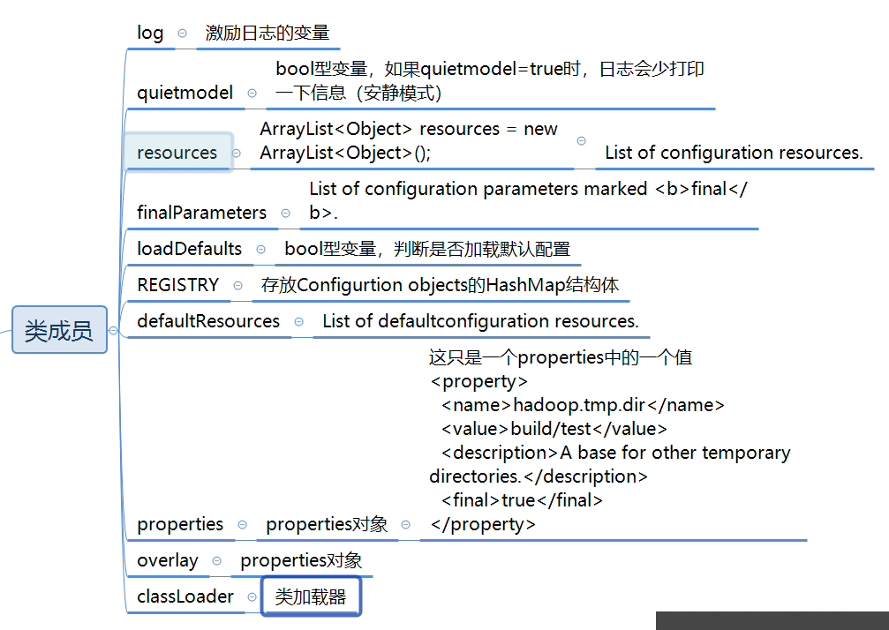
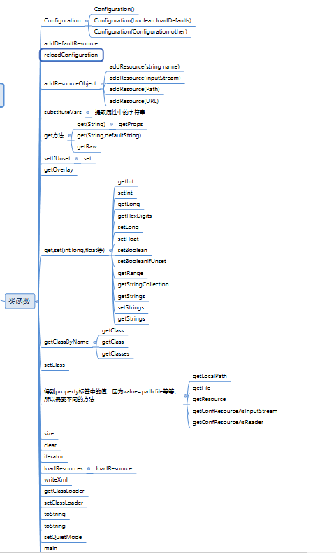

Hadoop 源码分析-Configuration.java
万事开头难，今天开始Hadoop源码分析的第一天。首先从简单的入手，分析Configuration.java
【没有特别声明，源码都是Hadoop 0.20版本】
类结构
主要类成员介绍： 
类方法介绍：

上面是我按照主要的功能将函数分了类，这样方便理解。
Configuration类分析
研究一个类，我们先从类的构造函数分析。
Configuration类有三个构造函数：
1.Configuration()
2.Configuration(boolean loadDefaults)
3.Configuration(Configuraiont other)
前两个Constructor使用的是典型的重叠构造器模式，也就是默认的无参Constructor会生成一个加载了默认配置文件得Configuration对象，其中Configuration(boolean loadDefaults)中的参数就是为了控制构造出来的对象是加载了默认配置文件还是没有的标识。后一个是拷贝另一个Configuration实例。但是从这条路开始我们就会发现走不下去了。因为构造函数只是将创建好的实例放入REGISTRY中。如下面代码所示。根本就没有下文。
public Configuration(boolean loadDefaults) {
this.loadDefaults = loadDefaults;
if (LOG.isDebugEnabled()) {
LOG.debug(StringUtils.stringifyException(new IOException("config()")));
}
synchronized(Configuration.class) {
REGISTRY.put(this, null);
}
}
刚开始看到这里，我也觉得很奇怪，后面发现这里是采用了延迟加载的设计模式，当真正需要配置数据的时候，才开始分析配置文件。
什么时候解析配置数据
回想一下，我们需要实例化一个配置后，需要获取配置数据时，调用的是不是conf.get(String name), 然后我们就能得到name对应的值了。（一般我们是调用getInt,getFloat,getString等方法，但是这些方法都是调用get，然后转换为输出类型）,所以接下来我们看看get方法做了什么事
public String get(String name, String defaultValue) {
return substituteVars(getProps().getProperty(name, defaultValue));
}
定位substituteVars可以看出，这是解析一个字符串。举例说明：getProperty(String name)得到的这个
<property>
<name>hadoop.tmp.dir</name>
<value>build/test</value>
<description>A base for other temporary directories.</description>
<final>true</final>
</property>
通过substituteVars，我们得到的字符串就是 “build/test”这个。所以接下来的关键就是看getProperty（）做了什么事情。
private synchronized Properties getProps() {
if (properties == null) {
properties = new Properties();
loadResources(properties, resources, quietmode);
if (overlay!= null)
properties.putAll(overlay);
}
return properties;
}
终于看到了loadResources，从函数名字我们就能看出这是开始加载资源了，这就是开始解析配置数据了。 可以看出来如果是第一次（properties == null)），我们就加载资源，如果不是第一次就直接返回。注意这里还有 if (overlay!= null) properties.putAll(overlay);这个语句。我们分两步分析： （1）loadResources做了什么
（2）if (overlay!= null) properties.putAll(overlay);是什么意思
loadResources做了什么
private void loadResource(Properites properties,
ArrayList resources,
boolean quiet){
if(loadDefaults){
for(String resources : defaultResources){
loadResource(properties, resources, quiet);
}
//support the hadoop-site.xml as a deprecated case
if(getResource("hadoop-site.xml")!=null){
loadResource(properties, "hadoop-site.xml", quiet);
}
}
for(Object resource: resources){
loadResource(properties, resource, quiet);
}
}
从这里可以看出来loadDefaults的作用了，如果loadDefaults=true,就先加载默认的配置。可以看出来这里的关键是loadResource函数，我们看看这个函数做了什么。这个函数太长，我们直接看最后
//Igore this parameter if it has already been marked as 'final'
if(attr != null && value !=null){
if(!finalParameters.contains(attr)){
properties.setProperty(attr, value);
if(finalParameter)
finalParameters.add(attr);
}else{
LOG.warn(name + ":a attempt to override final parameter:" + attr + "; Ignoring.");
}
}
从这里我们可以看出来，已经开始读取配置数据了，读取的
但是我还想弄清楚添加默认配置文件和不添加的区别。我们回到loadResources中，可以发现的是，先添加默认配置，然后再添加已经存在的资源配置，最终所有的
private void loadResource(Properites properties,
ArrayList resources,
boolean quiet){
if(loadDefaults){
for(String resources : defaultResources){
loadResource(properties, resources, quiet);
}
//support the hadoop-site.xml as a deprecated case
if(getResource("hadoop-site.xml")!=null){
loadResource(properties, "hadoop-site.xml", quiet);
}
}
for(Object resource: resources){
loadResource(properties, resource, quiet);
}
}
接下来还有一个变量我们还是有疑惑：overlay即：了解 if (overlay!= null) properties.putAll(overlay);是什么意思。先剧透一下，可以将overlay看成properties的副本，但是它一直存在内存中，不清空。这样下次addResource的时候，properties但是overlay没清空。所以 if (overlay!= null) properties.putAll(overlay); 意思也很清楚了，当副本还存在的时候，将副本的值在赋回properties。
我们再看看addDefaultResource(String name)，addResource(String resoruce)的区别。
public static synchronized void addDefaultResource(String name){
if(!defaultResources.contains(name)){
defaultResources.add(name);
for(Configuration conf: REGISTRY.keySet()) {
if(conf.loadDefaults) {
conf.reloadConfiguration();
}
}
}
}
public static synchronized void addResourceObject(Object resouce){
resouces.add(resouce); //add to resouces
reloadConfiguration();
}
可以看出来他们做法很简单。resources添加的是增加的配置文件。defaultResources添加默认的配置文件。但是他们都有一个conf.reloadConfiguration();方法。我们看看这个方法；
public synchronized void reloadConfiguration() {
properties = null; // trigger reload
finalParameters.clear(); // clear site-limits
}
可以看出来，每次向conf添加一个配置对象（例如：一个配置文件）的时候，properties 会清空，然后再从默认配置文件，已经存在的资源，overlay副本中读取所有的
总结： 至此， Configuration的分析已经结束了。最后做个总结：
（1）Configuration采用了延迟加载的设计模式，当真正需要配置数据的时候，才开始分析配置文件。
（2） 在作业运行过程中不要使用addDefaultResources(…)和addResourceObject(…)加载资源，因为这会导致properties对象重构一遍，建议此时使用setType(…)
（3）最终所有的